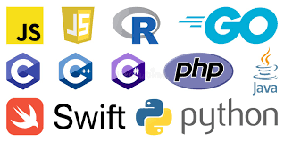

Языки программирования

Язы́к программи́рования — формальный язык, предназначенный для записи компьютерных программ[1][2]. Язык программирования определяет набор лексических, синтаксических и семантических правил, определяющих внешний вид программы и действия, которые выполнит исполнитель (обычно — ЭВМ) под её управлением.
Со времени создания первых программируемых машин человечество придумало более восьми тысяч языков программирования (включая эзотерические). Каждый год их число увеличивается[3]. Некоторыми языками умеет пользоваться только небольшое число их собственных разработчиков, другие становятся известны миллионам людей. Профессиональные программисты могут владеть несколькими языками программирования.
Язык программирования предназначен для написания компьютерных программ, которые представляют собой набор правил, позволяющих компьютеру выполнить тот или иной вычислительный процесс, организовать управление различными объектами, и т. п. Язык программирования отличается от естественных языков тем, что предназначен для управления ЭВМ, в то время как естественные языки используются, прежде всего, для общения людей между собой. Большинство языков программирования использует специальные конструкции для определения и манипулирования структурами данных и управления процессом вычислений.
Как правило, язык программирования определяется не только через спецификации стандарта языка, формально определяющие его синтаксис и семантику [⇨], но и через воплощения (реализации) стандарта — программные средства, обеспечивающие трансляцию или интерпретацию программ на этом языке [⇨]; такие программные средства различаются по производителю, марке и варианту (версии), времени выпуска, полноте воплощения стандарта, дополнительным возможностям; могут иметь определённые ошибки или особенности воплощения, влияющие на практику использования языка или даже на его стандарт.
История
Основная статья: История языков программирования
Ранние этапы развития
Можно сказать, что первые языки программирования возникали ещё до появления современных электронных вычислительных машин: уже в XIX веке были изобретены устройства, которые можно с долей условности назвать программируемыми — к примеру, музыкальная шкатулка (и позднее механическое пианино) посредством металлического цилиндра и Жаккардовый ткацкий станок (1804) посредством картонных карт. Для управления ими использовались наборы инструкций, которые в рамках современной классификации можно считать прототипами предметно-ориентированных языков программирования[источник не указан 225 дней]. Значимым можно считать «язык», на котором леди Ада Августа (графиня Лавлейс) в 1842 году написала программу для вычисления чисел Бернулли для аналитической машины Чарльза Бэббиджа, ставшей бы, в случае реализации, первым компьютером в мире, хотя и механическим — с паровым двигателем.
В 1930—1940 годах А. Чёрч, А. Тьюринг, А. Марков разработали математические абстракции (лямбда-исчисление, машину Тьюринга, нормальные алгоритмы соответственно) — для формализации алгоритмов.
В это же время, в 1940-е годы, появились электрические цифровые компьютеры и был разработан язык, который можно считать первым высокоуровневым языком программирования для ЭВМ — «Plankalkül», созданный немецким инженером К. Цузе в период с 1943 по 1945 годы[4].
Программисты ЭВМ начала 1950-х годов, в особенности таких, как UNIVAC и IBM 701, при создании программ пользовались непосредственно машинным кодом, запись программы на котором состояла из единиц и нулей и который принято считать языком программирования первого поколения (при этом разные машины разных производителей использовали различные коды, что требовало переписывать программу при переходе на другую ЭВМ).
Первым практически реализованным языком стал в 1949 году так называемый «Краткий код», в котором операции и переменные кодировались двухсимвольными сочетаниями. Он был разработан в компании Eckert–Mauchly Computer Corporation, выпускавшей UNIVAC-и, созданной одним из сотрудников Тьюринга, Джоном Мокли. Мокли поручил своим сотрудникам разработать транслятор математических формул, однако для 1940-х годов эта цель была слишком амбициозна. Краткий код был реализован с помощью интерпретатора[5].
Вскоре на смену такому методу программирования пришло применение языков второго поколения, также ограниченных спецификациями конкретных машин, но более простых для использования человеком за счёт использования мнемоник (символьных обозначений машинных команд) и возможности сопоставления имён адресам в машинной памяти. Они традиционно известны под наименованием языков ассемблера и автокодов. Однако при использовании ассемблера становился необходимым процесс перевода программы на язык машинных кодов перед её выполнением, для чего были разработаны специальные программы, также получившие название ассемблеров. Сохранялись и проблемы с переносимостью программы с ЭВМ одной архитектуры на другую, и необходимость для программиста при решении задачи мыслить терминами «низкого уровня» — ячейка, адрес, команда. Позднее языки второго поколения были усовершенствованы: в них появилась поддержка макрокоманд.
С середины 1950-х начали появляться языки третьего поколения, такие как Фортран, Лисп и Кобол[6]. Языки программирования этого типа более абстрактны (их ещё называют «языками высокого уровня») и универсальны, не имеют жёсткой зависимости от конкретной системы команд и конфигурации периферийных устройств. Программа на языке высокого уровня может исполняться (по крайней мере, в теории, на практике обычно имеется ряд специфических версий или диалектов реализации языка) на любой ЭВМ, на которой для этого языка имеется транслятор (инструмент, переводящий программу на язык машины, после чего она может быть выполнена процессором).
Обновлённые версии перечисленных языков до сих пор имеют хождение в разработке программного обеспечения, и каждый из них оказал определённое влияние на последующее развитие языков программирования[7]. Тогда же, в конце 1950-х годов, появился Алгол, также послуживший основой для ряда дальнейших разработок в этой сфере. Необходимо заметить, что на формат и применение ранних языков программирования в значительной степени влияли интерфейсные ограничения[8].
Какие языки программирования есть?

Есть конечно много языки программирование популярные из них:
Наподобе того языки программирования есть
А также можете смотреть по картинкам список самых популярных языков программирование;

В период 1960-х — 1970-х годов были разработаны основные парадигмы языков программирования, используемые в настоящее время, хотя во многих аспектах этот процесс представлял собой лишь улучшение идей и концепций, заложенных ещё в первых языках третьего поколения.
-
Язык APL оказал влияние на функциональное программирование и стал первым языком, поддерживавшим обработку массивов[9].
-
Язык ПЛ/1 (NPL) был разработан в 1960-х годах как объединение лучших черт Фортрана и Кобола.
-
Язык Snobol, разработанный и совершенствуемый в течение 1960-х годов, ориентированный на обработку текстов, ввёл в число базовых операций языков программирования сопоставление с образцом[10][11][12].
-
Язык Симула, появившийся примерно в это же время, впервые включал поддержку объектно-ориентированного программирования. В середине 1970-х группа специалистов представила язык Smalltalk, который был уже всецело объектно-ориентированным.
-
В период с 1969 по 1973 годы велась разработка языка Си, популярного и по сей день[13] и ставшего основой для множества последующих языков, например, столь популярных, как C++ и Java.
Не существует общепринятой систематичной таксономии языков программирования. Есть множество черт, согласно которым можно производить классификацию языков, причём одни из них однозначно проводят разделы между языками на основе технических свойств, другие основываются на доминирующих признаках, имеют исключения и более условны, а третьи полностью субъективны и нередко сопровождаются заблуждениями, но на практике весьма распространены.
Конкретный язык программирования в подавляющем большинстве случаев имеет более одного языка-предка. Многие языки создаются как сочетание элементов различных языков. В одних случаях такое сочетание проходит математический анализ на предмет непротиворечивости (см., например, Определение Standard ML), в других — язык формируется исходя из практических потребностей, для решения актуальных проблем с целью получения коммерческого успеха, но при этом без соблюдения математической строгости и со включением в язык взаимоисключающих идей (как в случае C++[17][18][19][20][21]).
Основная статья:
История языков программирование
Можно сказать, что первые языки программирования возникали ещё до появления современных электронных вычислительных машин: уже в XIX веке были изобретены устройства, которые можно с долей условности назвать программируемыми — к примеру, музыкальная шкатулка (и позднее механическое пианино) посредством металлического цилиндра и Жаккардовый ткацкий станок (1804) посредством картонных карт. Для управления ими использовались наборы инструкций, которые в рамках современной классификации можно считать прототипами предметно-ориентированных языков программирования[источник не указан 225 дней]. Значимым можно считать «язык», на котором леди Ада Августа (графиня Лавлейс) в 1842 году написала программу для вычисления чисел Бернулли для аналитической машины Чарльза Бэббиджа, ставшей бы, в случае реализации, первым компьютером в мире, хотя и механическим — с паровым двигателем.
В 1930—1940 годах А. Чёрч, А. Тьюринг, А. Марков разработали математические абстракции (лямбда-исчисление, машину Тьюринга, нормальные алгоритмы соответственно) — для формализации алгоритмов.
В это же время, в 1940-е годы, появились электрические цифровые компьютеры и был разработан язык, который можно считать первым высокоуровневым языком программирования для ЭВМ — «Plankalkül», созданный немецким инженером К. Цузе в период с 1943 по 1945 годы[4].
Программисты ЭВМ начала 1950-х годов, в особенности таких, как UNIVAC и IBM 701, при создании программ пользовались непосредственно машинным кодом, запись программы на котором состояла из единиц и нулей и который принято считать языком программирования первого поколения (при этом разные машины разных производителей использовали различные коды, что требовало переписывать программу при переходе на другую ЭВМ).
Первым практически реализованным языком стал в 1949 году так называемый «Краткий код», в котором операции и переменные кодировались двухсимвольными сочетаниями. Он был разработан в компании Eckert–Mauchly Computer Corporation, выпускавшей UNIVAC-и, созданной одним из сотрудников Тьюринга, Джоном Мокли. Мокли поручил своим сотрудникам разработать транслятор математических формул, однако для 1940-х годов эта цель была слишком амбициозна. Краткий код был реализован с помощью интерпретатора[5].
Вскоре на смену такому методу программирования пришло применение языков второго поколения, также ограниченных спецификациями конкретных машин, но более простых для использования человеком за счёт использования мнемоник (символьных обозначений машинных команд) и возможности сопоставления имён адресам в машинной памяти. Они традиционно известны под наименованием языков ассемблера и автокодов. Однако при использовании ассемблера становился необходимым процесс перевода программы на язык машинных кодов перед её выполнением, для чего были разработаны специальные программы, также получившие название ассемблеров. Сохранялись и проблемы с переносимостью программы с ЭВМ одной архитектуры на другую, и необходимость для программиста при решении задачи мыслить терминами «низкого уровня» — ячейка, адрес, команда. Позднее языки второго поколения были усовершенствованы: в них появилась поддержка макрокоманд.
С середины 1950-х начали появляться языки третьего поколения, такие как Фортран, Лисп и Кобол[6]. Языки программирования этого типа более абстрактны (их ещё называют «языками высокого уровня») и универсальны, не имеют жёсткой зависимости от конкретной системы команд и конфигурации периферийных устройств. Программа на языке высокого уровня может исполняться (по крайней мере, в теории, на практике обычно имеется ряд специфических версий или диалектов реализации языка) на любой ЭВМ, на которой для этого языка имеется транслятор (инструмент, переводящий программу на язык машины, после чего она может быть выполнена процессором).
Обновлённые версии перечисленных языков до сих пор имеют хождение в разработке программного обеспечения, и каждый из них оказал определённое влияние на последующее развитие языков программирования[7]. Тогда же, в конце 1950-х годов, появился Алгол, также послуживший основой для ряда дальнейших разработок в этой сфере. Необходимо заметить, что на формат и применение ранних языков программирования в значительной степени влияли интерфейсные ограничения[8].
Фредерик Брукс
и Хоар, Чарльз Энтони Ричард
делают акцент на необходимости обеспечения концептуальной целостности информационных систем вообще и языков программирования в частности, чтобы в каждой части системы использовались сходные синтаксические и семантические формы и не требовалось осваивать помимо собственно состава системы также и правила её идиоматического использования. Хоар предсказывал, что сложность Ады станет причиной катастроф. Алан Кэй отделяет языки, являющиеся «стилем во плоти» (англ. crystalization of style) от прочих языков, являющихся «склеиванием возможностей» (англ. agglutination of features)[52]. Грег Нельсон[53] и Эндрю Аппель[en][27] выделяют в особую категорию «языки, наследованные от математики» (англ. mathematically-derived languages).
Эти акценты призывают к использованию языков, воплощающих некое математическое исчисление, аккуратно адаптированное для того, чтобы быть более практичным языком для разработки реальных программ. Такие языки отличаются ортогональностью, и хотя это означает необходимость вручную реализовывать многие распространённые идиомы, доступные в более популярных языках в качестве примитивов языка, выразительность таких языков в целом может быть существенно выше.
Лишь некоторые языки попадают под эту категорию; большинство же языков проектируются приоритетно исходя из возможности эффективной трансляции в машину Тьюринга. Многие языки опираются на общие теории, но при разработке они почти никогда не проверяются на безопасность совместного использования конкретных языковых элементов, являющихся частными приложениями этих теорий, что неизбежно приводит к несовместимости между реализациями языка. Эти проблемы либо игнорируются, либо начинают преподноситься как естественное явление (англ. «not a bug, but a feature»), но в действительности их причиной является то, что язык не был подвергнут математическому анализу[54].
Наличие математического обоснования для языка может гарантировать (или, как минимум, обещать с очень высокой вероятностью) некоторые или все из следующих положительных свойств:
-
Существенное повышение стабильности программ. В одних случаях — за счёт построения доказательства надёжности для самого языка (см.типо безопасность), существенного упрощения формальной верификации программ и даже получения языка, который сам является системой автоматического доказательства (Coq, Agda). В других случаях — за счёт раннего обнаружения ошибок на первых же пробных запусках программ (Forth и регулярные выражения).
-
Обеспечение потенциально более высокой эффективности программ. Даже если семантика языка далека от архитектуры целевой платформы компиляции, к нему могут быть применимы формальные методики глобального анализа программ (хотя трудоёмкость написания даже тривиального транслятора может оказаться выше). Например, для языков Scheme и Standard ML существуют развитые полнопрограммно-оптимизирующие компиляторы и суперкомпиляторы, результат работы которых может уверенно конкурировать по скорости с языком низкого уровня Си и даже опережать последний (хотя ресурсоёмкость работы самих компиляторов оказывается значительно выше). Одна из самых быстрых СУБД — KDB[57] — написана на языке K. Язык Scala (унаследовавший математику от ML) обеспечивает на платформе JVM более высокую скорость, чем «родной» для неё язык Java[источник не указан 2401 день]. С другой стороны, Forth имеет репутацию одного из самых нетребовательных к ресурсам языков (менее требователен, чем Си) и используется для разработки приложений реального времени под самые маломощные ЭВМ; кроме того, транслятор Форта является одним из наименее трудоёмких в реализации на ассемблере.
-
Заранее известный (неограниченный или, наоборот, чётко очерченный) предел роста сложности программных компонентов, систем и комплексов, которые можно выразить средствами этого языка с сохранением показателей качества[27][58]. Языки, не имеющие математического обоснования (а именно такие наиболее часто применяются в мейнстриме: C++, Java, C#, Delphi и др.), на практике ограничивают реализуемую функциональность и/или снижают качество по мере усложнения системы[59], так как им присущи экспоненциальные кривые роста сложности как относительно работы одного отдельно взятого человека, так и относительно сложности управления проектом в целом[49][60]. Прогнозируемая сложность системы приводит либо к поэтапной декомпозиции проекта на множество более мелких задач, каждая из которых решается соответствующим языком, либо к языково-ориентированному программированию для случая, когда адресуемой языком задачей является как раз описание семантик и/или символьные вычисления (Lisp, ML, Haskell, Рефал, Регулярные выражения). Языки с неограниченным пределом роста сложности программ нередко относят к метаязыкам (что в непосредственном толковании термина не верно, но практике сводимо, так как всякий мини-язык, выбранный для решения некоторой подзадачи в составе общей задачи, может быть представлен в виде синтаксического и семантического подмножества данного языка, не требуя трансляции[61]).
-
Удобство для человека при решении задач, на которые этот язык ориентирован по своей природе (см. проблемно-ориентированный язык), что в некоторой степени также способно (косвенно) повлиять на повышение стабильности результирующих программ за счёт повышения вероятности обнаружения ошибок в исходном коде и снижения дублирования кода.
В. Ф. Турчин отмечает[62], что достоинства всякого формализованного языка определяются не только тем, сколь он удобен для непосредственного использования человеком, но и тем, в какой степени тексты на этом языке поддаются формальным преобразованиям.
Например, ссылочная прозрачность означает, что параметры функций не обязаны вычисляться перед вызовом — вместо этого фактически переданное выражение может быть целиком подставлено на место переменной в функции, и поведение функции от этого не изменится. Это открывает возможности почти произвольных автоматических преобразований программ[en]: могут устраняться ненужные промежуточные представления данных, редуцироваться сложные цепочки вычислений, подбираться оптимальное количество параллельных процессов, вводиться мемоизация, и пр. С другой стороны, это означает полное отсутствие побочных эффектов, а это делает реализацию некоторых алгоритмов заведомо менее эффективной, чем при использовании изменяемого состояния.
Для небольших и простых программ языки высокого уровня порождают машинный код большего размера и исполняются медленнее. Однако для алгоритмически и структурно сложных программ преимущество может быть на стороне некоторых языков высокого уровня, так как человек физически не способен выражать сложные концепции с учётом их эффективного исполнения на языке машины. К примеру, существует бенчмарк, на котором MLton и Stalin Scheme[en] уверенно опережают GCC. Есть масса частных причин, по которым автоматическая оптимизация в ходе трансляции языков высокого уровня даёт в принципе более высокую скорость исполнения, чем сознательный контроль способа реализации на языках низкого уровня. Например, имеются достоверные данные о том, что автоматическое управление памятью более эффективно, чем ручное, уже только при использовании динамического метода (см. сборка мусора)[63], а существует и потенциально более эффективный статический метод (см. управление памятью на основе регионов). Далее, для каждого микроконтекста необходимо распределить регистры с учётом минимизации обращения к памяти, а это требует решения задачи раскраски графа. Такого рода особенностей машинной логики очень много, так что общая информационная сложность возрастает экспоненциально при каждом «шаге на уровень вниз», а компиляция языка высокого уровня может включать десятки таких шагов.
Существует множество стратегий автоматической оптимизации. Некоторые универсальны, другие могут быть применимы лишь к языкам определённой природы, а некоторые зависят от способа использования языка. Примером может служить оптимизация хвостовых вызовов и её частный случай — оптимизация хвостовой рекурсии. Хотя компиляторы многих языков осуществляют оптимизацию хвостовой рекурсии при определённых условиях, лишь некоторые языки способны семантически гарантировать оптимизацию хвостовых вызовов в общем случае. Стандарт языка Scheme требует, чтобы всякая реализация гарантировала её. Для многих функциональных языков она в принципе применима, но лишь оптимизирующие компиляторы её выполняют. В языках вроде Си или C++ она может производиться лишь в определённых случаях и лишь при использовании глобального анализа потока управления[64].
Языки высшего порядка в большинстве случаев вынуждены исполняться медленнее, чем языки первого порядка. Причины лежат как в самой декомпозиции линейного кода на цепочку вложенных вызовов, так и в вытекающих особенностях низкоуровневого представления функций (см. замыкание) и данных (обёрнутое (англ. boxed), теговое). Однако существуют техники агрессивной оптимизации программ, позволяющие редуцировать языки высшего порядка до языков первого порядка (см. дефункционализация, MLton, Stalin Scheme[en]).